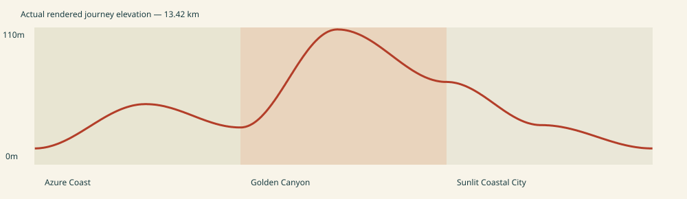
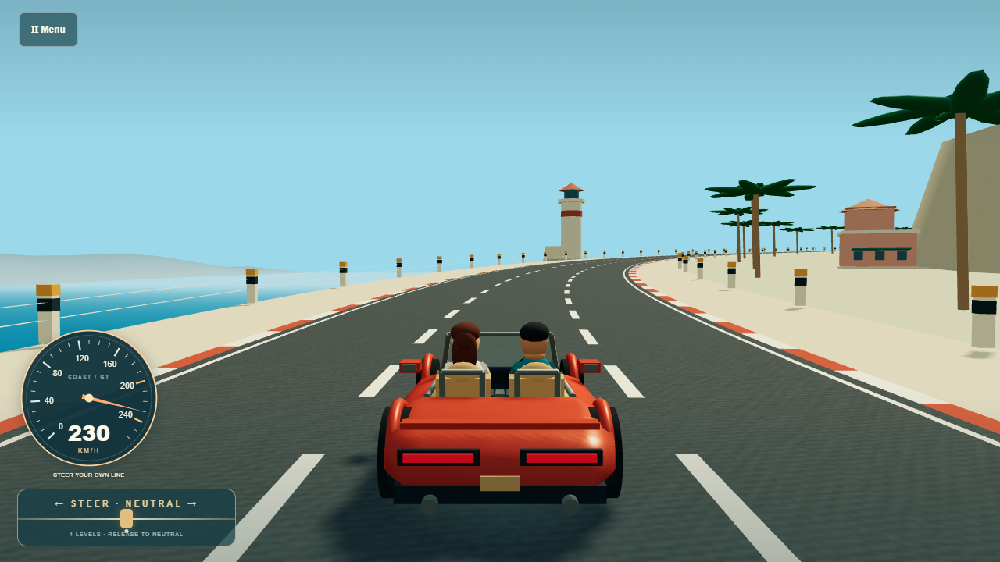
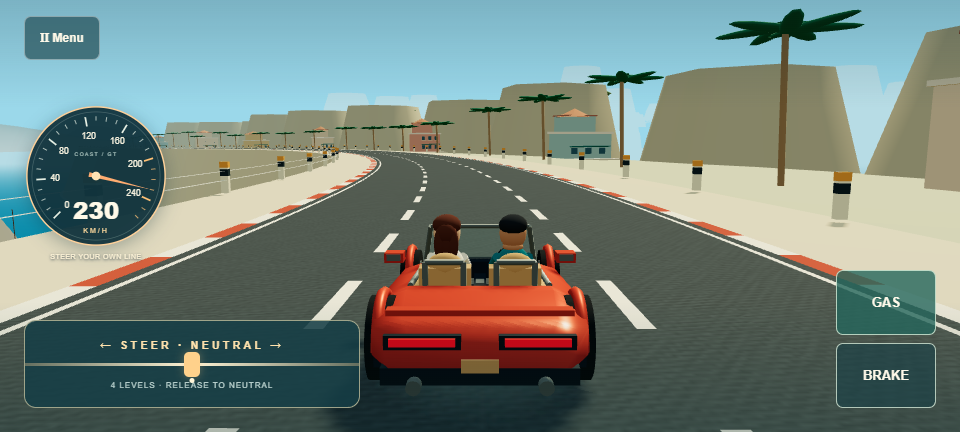
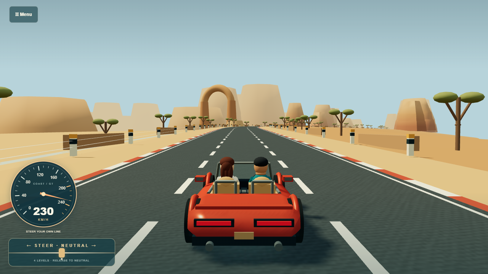
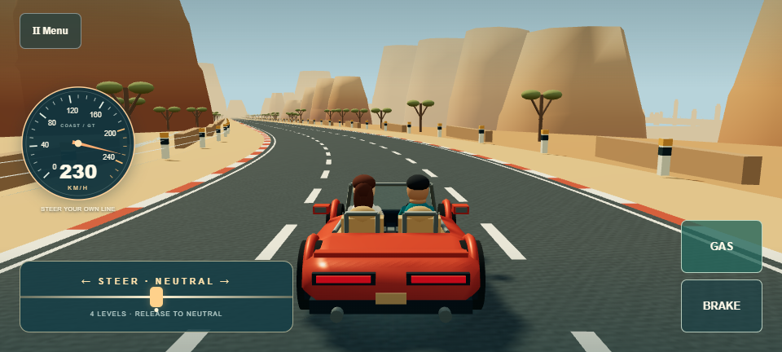
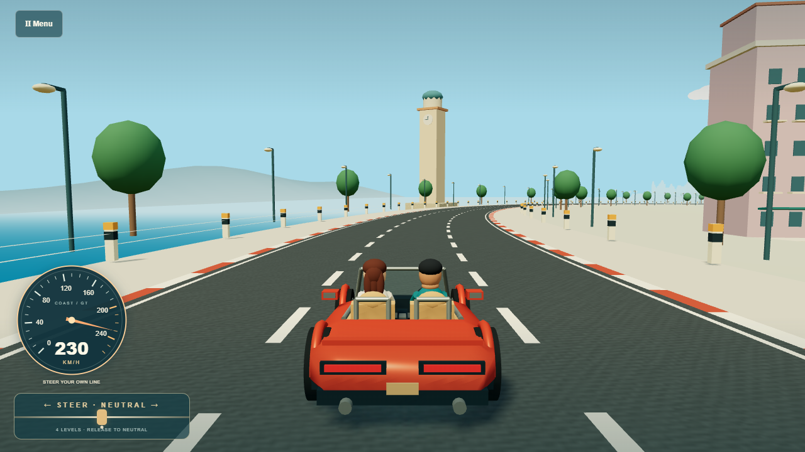
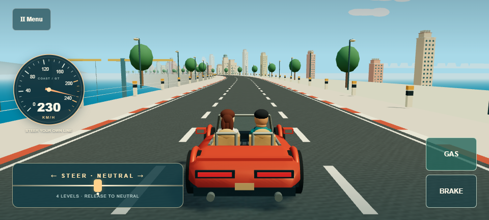

v0.6 Scenic Journey · local review
Three distance-driven acts, animated wheels and travelers. Silent real browser recordings. Long journeys use an external test controller; touch challenge clips use browser touch events. Physical Pixel results and subjective fun remain unverified.
Handoff · Road beats · Telemetry audit

Azure Coast


Golden Canyon


Sunlit Coastal City


Final complete journey
Coast → Canyon
Canyon → City
City → Coast
Wheels: stopped
Wheels: launch-brake
Wheels: fast
Wheels: left-drift
Wheels: right-drift
Occupants: stopped-side
Occupants: fast-side
Occupants: fast-chase
Occupants: left-chase
Occupants: right-chase
Occupants: left-cockpit
Occupants: right-cockpit
Touch drive: medium-full-gas-sweep
Touch drive: high-full-gas-sweep
Touch drive: extreme-fast
Touch drive: extreme-braked